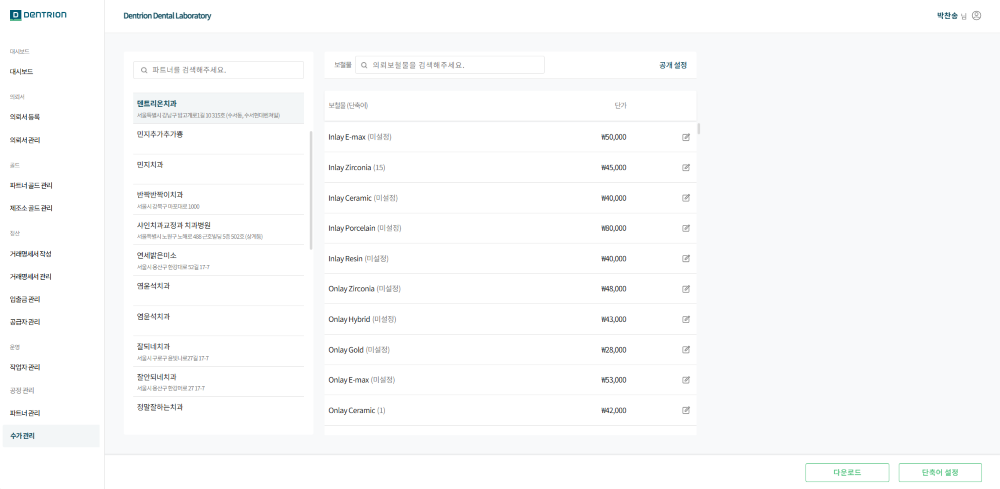
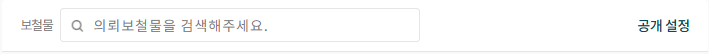
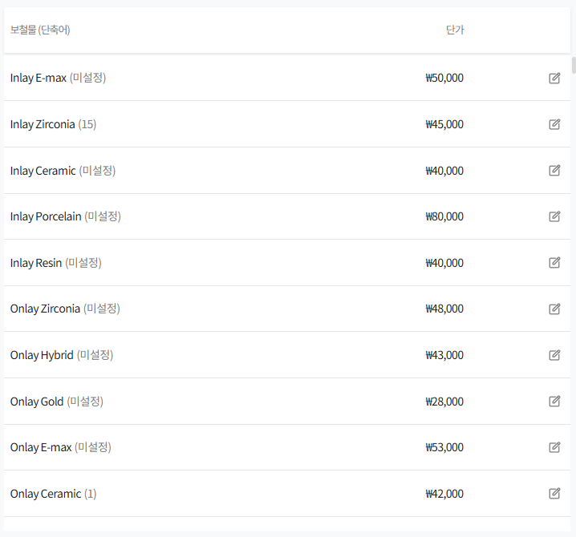
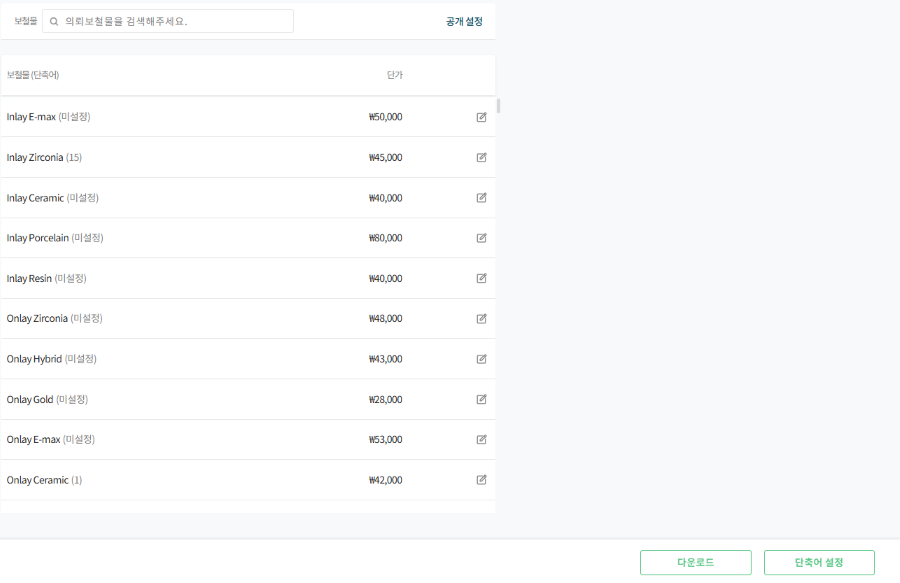
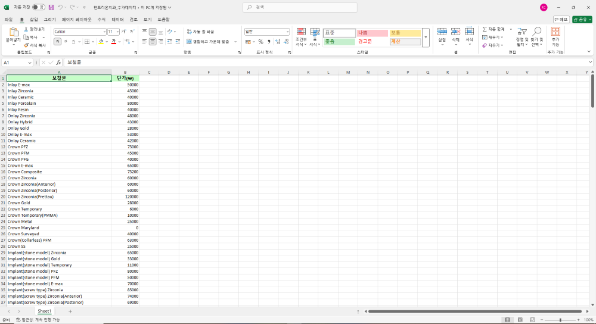
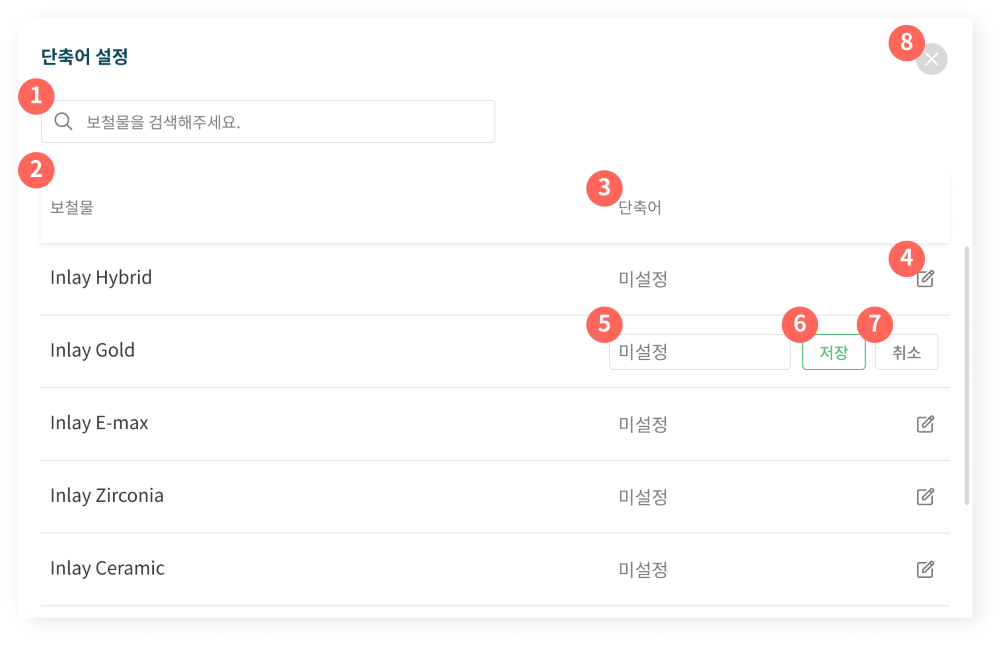

1.수가 관리
이 화면은 파트너의 보철물 수가 확인 및 수정을 할 수 있으며, 보철물 공개 여부와 단축어 설정이 가능합니다.

1-1.기능 설명
1-1-1.파트너 목록
파트너 검색 및 목록을 확인할 수 있습니다.

1-1-2. 보철물 관리
파트너 별로 의뢰 보철물을 조회 및 공개 설정을 할 수 있습니다.

1.[검색] : 보철물명 또는 단축어 입력 시 원하는 보철물을 빠르게 조회할 수 있습니다.
2.[공개 설정] : 등록된 보철물의 노출 여부를 확인하고 관리할 수 있습니다.
공개 설정 설명
[공개 설정] 버튼 클릭 시 비노출 항목까지 전체 의뢰 보철물 목록이 보여집니다.
1.[공개/비공개] : 의뢰서 작성 시 보철물의 노출 여부를 설정할 수 있습니다.
[저장/취소] : 수정 사항이 있는 경우 [저장] 버튼이 활성화 됩니다.
1-1-3.보철물 목록
파트너 별로 의뢰 보철물의 단축어와 수가 관리를 할 수 있습니다.

1.보철물 : 등록된 보철물입니다.
2.단축어 : 의뢰서 작성 또는 보철물 검색 시 빠르게 검색할 수 있도록 설정한 약어입니다.
3.단가 : 등록된 보철물의 기본 단가입니다.
4.수정 : 파트너 별로 등록된 보철물의 기본 단가를 수정 할 수 있습니다.
1-1-4.다운로드
우측 하단 다운로드 버튼 클릭 시 엑셀 파일 형식으로 수가표를 출력할 수 있습니다.

엑셀 파일 예시

1-1-5.단축어 설정
우측 하단 단축어 설정 버튼 클릭 시 단축어 설정 팝업창이 열립니다.

1.[보철물 검색] : 보철물명 또는 단축어를 입력해 원하는 보철물을 빠르게 찾을 수 있습니다.
2.[보철물] : 현재 등록된 보철물입니다.
3.[단축어] : 해당 보철물에 설정된 단축어입니다.
4.[수정] : 선택한 보철물의 단축어를 수정할 수 있습니다.
5.[단축어 입력란] : 한글,영문, 숫자 입력 가능하며 공백 포함 최대 10자까지 입력할 수 있습니다.
입력하지 않으면 ‘미설정’으로 표시됩니다.
6.[저장] : 입력 또는 수정한 단축어를 저장합니다.
7.[취소] : 단축어 입력 또는 수정을 취소합니다.
8.[닫기] : 단축어 설정 팝업창을 닫습니다.